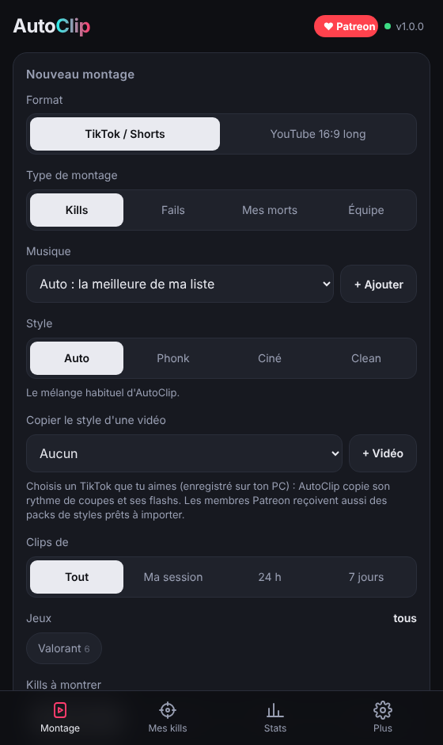

AutoClip trouve tes vrais kills Valorant, les cale pile sur le beat de ta musique et ajoute ralentis, flashs et transitions. Un clic, 20 secondes de rendu, prêt à publier.
Gratuit · Windows 10/11 · Rien n'est envoyé sur internet

Pas de logiciel de montage, pas de timeline. Si tu as Medal, tu as déjà tout.
AutoClip trouve tout seul ton dossier Medal. FFmpeg est inclus, rien d'autre à installer.
Ta chanson préférée en mp3. AutoClip détecte le tempo, les beats et le drop.
Ton meilleur kill tombe sur le drop. Vertical 9:16 pour TikTok et Shorts, ou 16:9 pour YouTube.
Medal enregistre déjà tes kills. AutoClip s'en sert, donc chaque plan est un vrai kill, pas toi qui marches.
2K, 3K, ace, clutch, one taps : les gros moments passent en premier, chaque coupe tombe sur un beat.
Ralenti au drop, arrêt sur image, whip pan, glitch, flash, compteur de kills et textes ACE ou ONE TAP.
Un montage seulement à l'Operator, ou seulement sur Jett. AutoClip lit le fil des kills de tes clips.
Donne-lui un TikTok que tu aimes : AutoClip copie son rythme de coupes et ses flashs.
Coche tes kills préférés et mets ta plus belle action sur le drop.
Compare tes kills de la semaine avec tes potes et fais des montages d'équipe.
AutoClip reste gratuit pour tout le monde. Les membres Patreon financent les nouvelles fonctions et reçoivent des bonus.
Oui. Toutes les fonctions de montage sont gratuites. Patreon donne des bonus (packs de styles, accès anticipé) mais ne bloque rien.
Un PC Windows 10 ou 11 (64 bits) et Medal pour enregistrer tes clips. AutoClip marche surtout avec Valorant : les autres jeux utilisent l'analyse du son, moins précise.
Non. Tout se passe sur ton PC. Seul le défi entre amis, si tu le rejoins, partage ton pseudo et tes stats de la semaine.
AutoClip accepte toutes tes chansons, mais pour publier, prends de la musique libre de droits. Autre option : monte avec la chanson tendance, puis remplace le son par la même chanson dans la bibliothèque de TikTok.
C'est normal pour une nouvelle app pas encore signée. Clique sur « Informations complémentaires », puis « Exécuter quand même ».